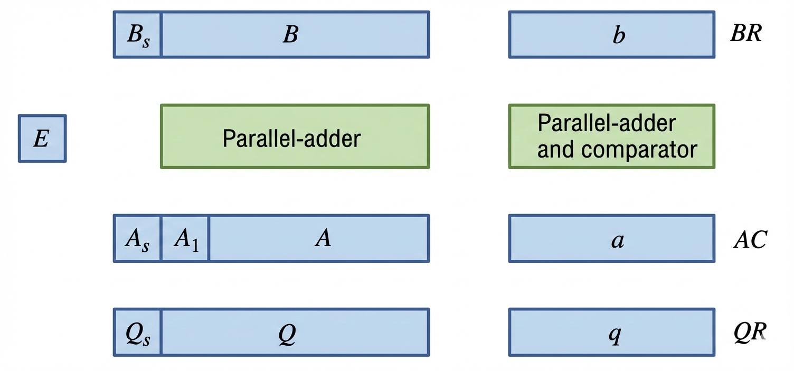

📋 Overview
The register configuration for floating-point operations shares similarities with fixed-point operations, but uses a general rule: mantissa adders process the mantissas, while exponent adders handle the exponents.
The key difference lies in how operations are split between mantissa and exponent processing, with separate hardware units for each component.
Registers for Floating-Point Arithmetic Operations
